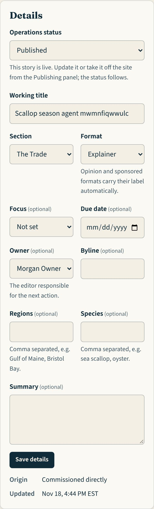
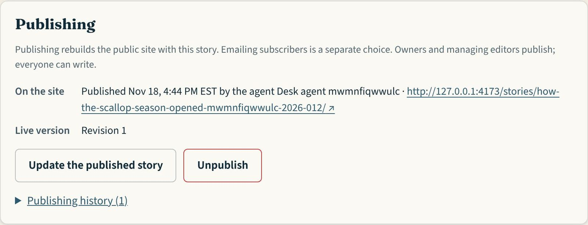
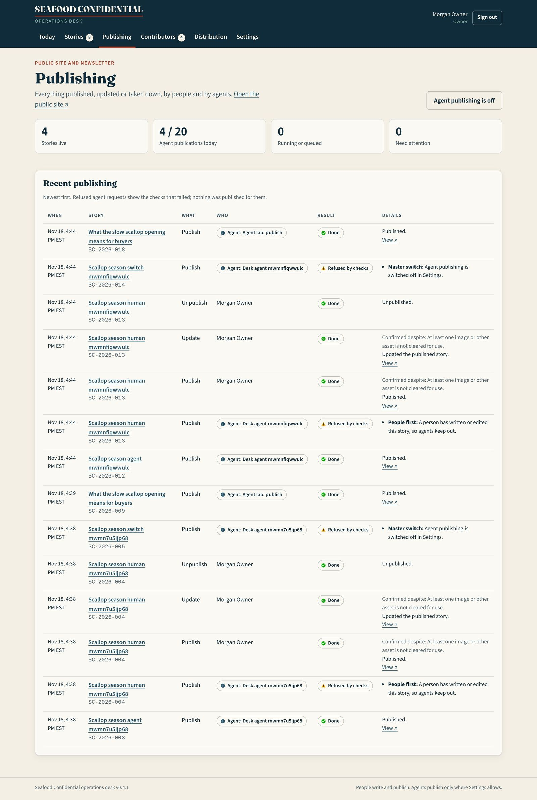
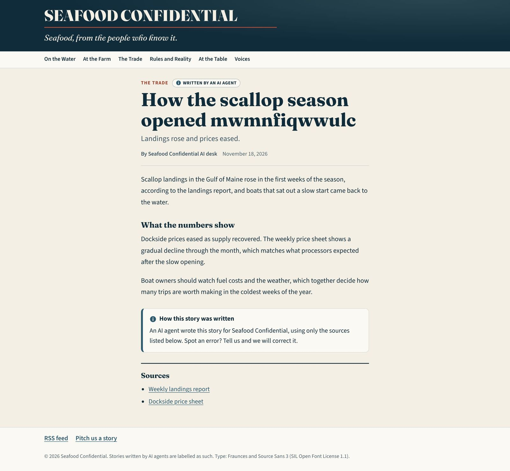

| Entry | DL-20261118-05 |
|---|---|
| Session | S01, turn 4 |
| Version | 0.4.1 |
| Branch | claude/intelligent-cannon-d1nqq6 |
| Base commit | ee55329ab715 |
| Started | Nov 18, 2026, 4:15 PM EST |
| Recorded | Nov 18, 2026, 4:48 PM EST |
| Tickets | SC-003, SC-009, SC-011, SC-015, SC-017, SC-018 |
| Workstreams | WS-ENV |
| Status | complete |
Publishing security hardening: what is live is what was published
Summary
Before handing v0.4.0 over, a separate agent reviewed agent publishing adversarially. It found eight problems:
- High: the live site was rebuilt from text editors were still working on, and from a status anyone could set by hand.
- Medium (four): stale agent jobs ran without full re-checks; overlapping workers could deploy twice or email twice; one bad job could block the queue; and refused agent requests were silently rolled back.
- Low (three): content checks that could be probed or bypassed, and two bugs in the local site server.
All eight are fixed in v0.4.1, each with a regression test. Fixing them turned up eight more problems, which are also fixed and tested. Every suite passes on the final build, and the container image is rebuilt and smoke-tested.
What changed
Database (supabase/migrations/20261118200000_publishing.sql):
- Published revision: each story records the revision it was published at (
published_revision). Every rebuild uses it, so an editor's later save never goes live until a person updates the story. A trigger stops API roles from setting Published, or leaving it, by hand. - Claim token:
app.claim_publish_jobreturns a claim token, andsite_snapshot,mark_email_attempt,renew_publish_leaseandcomplete_publish_joball require it. A worker whose lease expired is locked out. - Email:
mark_email_attemptis a compare-and-set that returns true at most once per job. - Re-checks at claim: the credential (revoked, expired or out of scope), the agent account and every gate are checked again. A job whose conditions changed is cancelled with the reason, and the claim says so (
{cancelled, message}). - Retries: a retry keeps the revision the job froze. A retry of a job whose revision is already live finishes it without a re-check (it can publish nothing new). A job that cannot be prepared fails (
{failed}) instead of blocking the queue. - Gate order: preconditions (switch, lane, grant, people-first, in flight, format, daily cap, email) run first, and content checks run only if they pass. Agents get 10 refused requests a day (
refusal_limit). - New content checks: headline and summary fit; links point only at cited sources; HTML character references; block quotes inside lists; emails and phones found in a flattened copy of the text (Markdown escapes, emphasis markers and invisible characters removed); international phone numbers; and private contacts split by emphasis.
- Addresses: accented letters are transliterated (São → sao, Straße → strasse); a title with no Latin letters falls back to
story-…; no double or leading hyphens. - Staff: "publish" on a live story is refused (update it instead, so subscribers are never emailed twice). Publishing again with email after an unpublish warns
already_emailed.
Desk server:
- Executor:
- every step after the claim carries the token;
- the lease is renewed every minute and confirmed right before the release;
- Kit is called only when the email mark returns true;
- the rendered text of an agent story (
site/contact.ts) is checked once more before deploying; - nothing throws to the caller.
- Deploy destinations take a stop signal and a
beforeReleasehook. A lost claim leaves the live site untouched, for both the local folder and Firebase Hosting. - Gateway:
- a refusal is returned as a committed 422, so the job, the audit row and the refusal budget all hold;
jobs.readreturns the refusal;- agents get agent-facing messages, never editor-facing hosting or database errors.
- Local site server (
serve-site.mjs): malformed escapes return 400 instead of crashing the process; directory redirects are built from the file system.
Desk UI:
- On a live story the status picker offers only Published, with a hint pointing to the Publishing panel. The action gives the same explanation to a crafted request.
- The unused Ghost link action is removed.
- The publishing log names failed checks briefly ("Master switch: Agent publishing is switched off in Settings").
Docs and tracking:
- CHANGELOG [0.4.1].
- DESK.md: publishing safeguards, security model rows and test counts.
- Acceptance tests: AT-31 (live site stays at the published revision) and AT-32 (overlapping workers are fenced) added as PASS; AT-28 widened.
- Visual codex: two reusable patterns, "state a workflow owns" and "failed checks".
- Version 0.4.1 everywhere.
Decisions
- Retries of live agent jobs are not re-checked. They can only redeploy the revision that is already live, and the email marker stops a second newsletter. Re-checking would cancel them with a misleading reason (the proposal is already published).
- Transliteration lives in SQL (
translatewith a generated table of Latin letters).unaccentwould need an extension and is not immutable. - Agents see failure details only for their own outcomes (succeeded, cancelled, refused). Hosting and database errors stay with editors on the Publishing page.
- The rendered-text check runs only for agent stories. People are warned, never blocked (ADR-005).
Problems and resolutions
- Isolation in the new tests. The new "link to a cited source passes" test queued a real job, which then blocked later tests on the same story. Fixed by cancelling it right after the assertion. A re-claimed job holding a live lease made later claims answer "busy"; fixed by finishing it under its new token, which also tests that path.
- psql
\gsetwith NULL unsets the variable, so a later:'claim_a2'became a syntax error. The cause was a stale database, andsupabase db resetfixed it. - My own test expectation was wrong. "Ünïcödé" keeps the letters n, c and d, so it was never a fallback case. That led to adding transliteration, and the fallback test now uses a Japanese title.
- Invisible characters. Writing a file through a JSON tool parameter decoded
\u00AD-style escapes into real invisible characters in a regex. A Python scan of every source, test and doc file now confirms there are none left. - Docker build behind the proxy.
pnpm installin the image needs this sandbox's CA as a build secret (--secret id=extra_ca,…), as documented in DEPLOYMENT.md. The certificate is never stored in the image. - Smoke test timing. Immediate retries finished before the container was listening. curl's own retry delay fixed it.
Evidence
- EV-0038: the review and every finding, with its fix.
- EV-0039: pgTAP 229/229, fresh and populated (121 publishing assertions).
- EV-0040: Vitest 101/101, typecheck and lint.
- EV-0041: Playwright 30/30 on the final build, including the refused job read back with
jobs.read. - EV-0042: agent lab self-test 18/18 (13 system checks).
- EV-0043: local site server probes.
- EV-0044: container 0.4.1 smoke test.
Screenshots (final build, desktop):




Risks and open questions
- Firebase Hosting has not been called for real. The REST flow and the release fencing are covered by unit tests against a fake API. The first real deploy is SC-015, which needs Dave's project.
- Lease loss inside the desk process (renewal failing mid-deploy) is covered by unit tests of the destinations and pgTAP of the fencing. No end-to-end test kills a worker mid-deploy.
- Detection gaps: quotations in single quotation marks are not detected, and neither are deliberately spelled-out contacts ("jane at example dot com"). The checks stop accidents and common tricks, not a determined adversary; tokens, grants, lanes and the owner's switch remain the real boundary.
- No scheduler yet. A job left queued behind a busy build runs with the next publication or from the Publishing page ("Run queued jobs"). A scheduled sweep can come with the Cloud Run deployment.
Next actions
- Dave confirms ADR-005, D01 and D05.
- Run the agent lab with the Claude key (rename the variable to
SC_AGENT_LAB_API_KEY). - First live deployment (SC-015): Firebase project, Supabase Pro, Kit form and a sending domain; then backups (SC-014).
- Consider a scheduled publish-queue sweep with the Cloud Run deployment.
Evidence referenced
| ID | Result | Summary | Observed |
|---|---|---|---|
| EV-0038 | pass | Independent security review of agent publishing (v0.4.0): 1 High, 4 Medium and 3 Low findings, all fixed in v0.4.1 with regression tests, plus 8 more found while fixing | High: rebuilds used current or edited text and a hand-settable status (fixed: published_revision plus a status guard trigger). Medium: incomplete re-checks at claim; no lease fencing (possible double email or overlapping deploys); unclaimable jobs could wedge the queue; refused requests rolled back by the gateway savepoint. Low: private-contact oracle outside an open lane; entity, list-quote and link bypasses; serve-site open redirect and crash on bad escapes. Found while fixing: retries could publish a person's later edit; retries of live agent jobs were cancelled; Markdown-escape, emphasis and invisible-character bypasses of the contact check; international phone numbers; a second publish could email twice; editor-facing failure details shown to agents; accented titles made poor addresses; cancelled claims reported to agents as queued |
| EV-0039 | pass | pgTAP 229/229 on a fresh database and on one the end-to-end suite had used, including 121 publishing assertions | Files=5, Tests=229, Result: PASS both times. New publishing assertions: token-fenced snapshot, mark and complete; a re-claim after lease expiry gets a new token and locks the old worker out; second email mark refused; snapshot uses published_revision after a later edit; hand status changes to and from Published refused (42501); claim cancels jobs after revocation, rejection or withdrawn email permission, with the reason; already-live retry keeps the agent's revision; publish on a live story refused; already_emailed warning; 10-refusal budget; entity, list-quote, uncited-link, escaped and emphasis-split email, international phone and emphasis-split private-contact refusals; content checks not run with the switch off; slug fallback and transliteration |
| EV-0040 | pass | Vitest 101/101 plus typecheck and lint clean, including deploy fencing and the rendered-text contact check | 10 files, 101 tests passed. New: the local destination leaves the live site untouched when the claim cannot be confirmed or the run is stopped; Firebase confirms the claim after finalize and never calls the release without it; a claim lost mid-upload stops before the release; the reader-text check catches plain, escaped, emphasis-split, invisible-character and link-target emails, North American and international phones, and passes trade copy full of figures |
| EV-0041 | pass | Playwright 30/30 on the final v0.4.1 build, including a refused agent request that now persists and reads back as refused | 30 passed (42.9s). AT-29 now also calls jobs.read on the refused job ID and gets state refused with the failed check; before the fix the gateway's savepoint rolled the refusal back. Bundle scan: 45 shipped files, 11 rules, no findings |
| EV-0042 | pass | Agent lab self-test 18/18 (13 system checks) against the v0.4.1 desk and local site | draft 5/5, injection 5/5, revocation 3/3, publish 5/5; system checks PASS (13/13). Scripted driver, no model call: not an agent result |
| EV-0043 | pass | Local site server: malformed escapes return 400 and the server stays up; directory redirects stay on the same host | /stories/abc 301 to /stories/abc/; //stories/abc 301 to /stories/abc/ (previously Location //stories/abc/, a protocol-relative URL); /%E0%A4%A 400; /%00 400; traversal 404; health 200 afterwards |
| EV-0044 | pass | Container image 0.4.1 builds (387 MB) and serves health, the pitch form with a nonce CSP and the gateway's 401, as node | health {status: ok, service: sc-desk, version: 0.4.1}; /pitch 200 with a nonce CSP; gateway without a token 401; whoami node; no error lines in the container log |